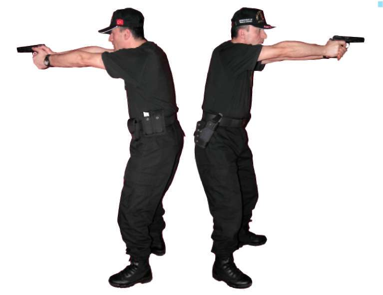
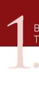

^ Katılımcıların “Temel Atış Teknikleri” dendiğinde ne anladıklarını anlamaya çalışın.
^ “Temel Atış Teknikleri”nin önemli noktaları üzerinde durun.
^ “Temel Atış Teknikleri”nde sık yapılan hatalar üzerinde durun.
A. YARI OTOMATİK TABANCA İLE TEMEL ATIŞ EKNİKLERİ
Temel Prensipler
a) Duruş
b) Tutuş (kabza kavrama)
c) Nişan alma
d) Nefes kontrolü
e) Tetik çekme
a) DURUŞ
Doğru bir duruş, iyi bir atışın temelini oluşturur. Bu açıdan atış esnasında doğru duruş, bir boksörün duruşuyla (gardını almasıyla) benzerlik göstermektedir. Tabanca ile atış yaparken vücudun alacağı biçim şu şekilde olmalıdır: 1. Ayaklar omuz genişliğinde açık olmalı, ayakucu hedefi gösterir şekilde durmalı ve destek alınan ayak, üzerinde durulan ayağın hafifçe önünde olmalıdır.
2. Dizler hafifçe kırılmalıdır (esnek tutulmalıdır) 3. Ağırlık, ayaklar arasında dengeli dağılmalı, ayaklar zeminde yatay pozisyonda durmalı yani ayak tabanı zemine tam basmalıdır.
4. Göğüs, belden öne doğru hafifçe eğilmelidir.
5. Her iki kol hedefe doğru yönelmiş vaziyette, mümkün olduğunca ileri doğru açılmış ve düz durumda tutulmalıdır.
6. Baş dik durumda ve hedefe dönük olmalıdır. (Bakınız Resim-1.a) 26

BÖLÜM
TEMEL ATIŞ TEKNİKLERİ
Resim 1.a) Duruş (Yarı Otomatik Tabanca)
b) TUTUŞ (KABZA KAVRAMA)
Tabancanın doğru tutulması ve kabzanın kavranması aşağıdaki gibidir: 1. Atış yapan elin baş ve işaret parmakları bir “V” oluşturmalıdır.
2. Tetiği çekecek parmak, silahın gövdesinde, sürgüye paralel durumda bulunmalıdır. Başparmak, gövdenin diğer tarafında ve yine sürgüye paralel durumda olmalıdır. Diğer üç parmak, kabzanın ön tarafında, tetik çemberinin altını tutuyor olmalıdır.
3. Destek veren elin arka kısmı, silah kabzasının boşta kalan kısmını dolduracak şekilde yerleştirilmelidir. Bu şekilde, 360 derecelik bir kavrama sağlanmaktadır.
4. Destek veren elin başparmağı sürgüye paralel şekilde, ateş eden elin baş-parmağının altında durmalıdır. Destek veren elin parmakları ateş eden elin parmaklarının etrafında dolanacak şekilde tetik çemberinin altında tutulmalıdır. Tutuş esnasında, destek veren elin işaret parmağının tetik çemberinin önüne götürülmemesi çok önemlidir. (Bakınız Resim- 1.b) 27

Resim-1.b) Tutuş (Yarı Otomatik Tabanca)
c) NİŞAN ALMA
Nişan alma, göz, gez, arpacık ve hedef ilişkisini tanımlamaktadır.
Arpacık, hedefin tam ortasına yerleştirilip gezden bakıldığında, arpacığın ucu ile gezin üst kısmı aynı hizada durmalı ve tam ortasında, gezin iki tarafında da eşit boşluk olacak biçimde görülmelidir.
1. Her iki göz sürekli açık tutulmalıdır.
2. Bu esnada göz, arpacığa odaklanmalı, hedef ve hedefin arkası biraz bulanık görülmelidir. (Bakınız Resim-1.c)